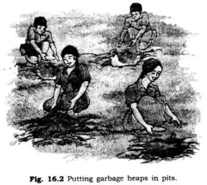

all ex and ques/ans is avlable in wedsite of ncert
1. (a) Which kind of garbage is not converted into compost by the redworms?
(b) Have you seen any other organism besides redworms, in your pit? If yes, try to find out their names. Draw pictures of these.
Ans:
(a) Garbage substances like broken glass, aluminium wrappers, plastic items, polythene bags, which are non-biodegradable cannot be converted into compost by the redworms.
(b) Yes, saprophytic organisms such as moulds (white, black or greyish cottony patches) and bacteria (which can be seen under microscope) that help in decomposing biodegradable substances.

2. Discuss:
(a) Is garbage disposal the responsibility only of the government?
(b) Is it possible to reduce the problems relating to disposal of garbage?
Ans:
(a) Along with government and local municipality corporations, it is also the duty of every citizen to help in garbage disposal.A clean environment is necessary to keep us healthy and also to avoid spread of diseases.We should throw garbage at proper places, such as dustbins so that Safai Karamcharis cam collect the garbage easily.
(b) It is possible to reduce the problems relating to disposal of garbage, if we adopt the following means:
(i) The garbage should be thrown at proper places. It should not be thrown ‘ on streets, roads, parks, etc.
(ii) The part of the garbage that can be reused should be separated from the one that cannot be used. The non-useful components should be disposed off at landfil
l areas.
(iii) Follow the rule of Three R’s:
A. Reduce: Use the things in minimum amount which is necessary to fulfil your requirement.
B. Recycle: The things such as plastic, paper, glass and metals separated from the garbage may be recycle to make new things instead of dumping them along with other wastes.
C. Reuse: It means use of things again and again. For example, plastic bottles of jam or pickle can be used for storing things in the kitchen.
3. (a) What do you do with the left over food at home?
(b) If you and your friends are given the choice of eating in a plastic plate or a banana leaf plotter at a party, which one would you prefer and why?
Ans:
(a) Left over food at home along with other kitchen waste like vegetable peel, paper are dumped into compost pit to convert them into manure. Later on manure is used to grow plants.
(b) We will select banana leaf platter because it can be easily converted into manure by composting.
Plastic plate can be recycled but in this process it gives out harmful gases which pollute the environment. Plastic items cannot be converted into manure by composting.
4. (a) Collect pieces of different kinds of paper. Find out which of these can be recycled,
(b) With the help of a lens look at the pieces of paper you collected for the above question. Do you see any difference in the material of recycled paper and a new sheet of paper?
Ans:
(a) Pieces of papers obtained from newspaper, notebooks, magazines, etc. can be recycled. Plastic coated and shiny papers cannot be recycled easily.
(b) The surface of recycled paper is rough whereas surface of new sheet of paper is smooth.
5. (a) Collect different kinds of packaging material. What was the purpose for which each one mas used? Discuss in groups.
(b) Give an example in which packaging could have been reduced.
(c) Write a story on how packaging increases the amount of garbage.
Ans:
(a) Packaging materials like thermocole, foam sheets, paper cuttings, card board, jute are used to protect the articles.Card boxes, plastic containers and tin containers are used to facilitate transportation of the packed materials.
(b) Packaging of toys, clothes, shoes, chocolates can be reduced.
(c) We use packaging materials to protect the articles and also to make package good- looking. For example, to give a gift on birthday, the gift is packed and wrapped in a shiny paper or plastic-coated paper. After use the packing material is thrown in dustbin. Similarly, plastic bags, cans, aluminium foils, plastic or aluminium cans and other packaging materials are used and thrown out after use.
Many things such as ghee, refined oil, soaps, detergents and most of eatable goods are sold in small packets.
All the above said measures can help in reducing the amount of garbage due to packing.
6. Do you think it is better to use compost instead of chemical fertilisers? Why?
Ans: Because:
Compost is eco-friendly and harmless. It maintains the texture and fertility of the soil.Chemical fertilisers destroy the natural composition of soil and have adverse effect on human health.
Composting helps in recycling of matter and also in disposal of garbage. Leaching of chemical fertilisers causes water pollution and death of aquatic organisms.
The production of compost is easy, cheap and harmless whereas production of chemical fertilisers is costly and problematic.